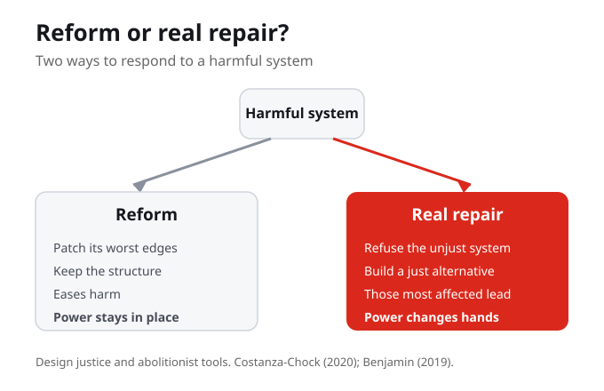
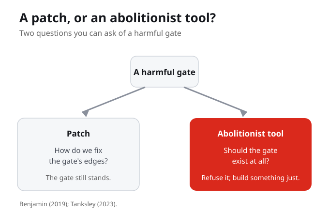

What Do You Know?
1. Week 11 turns the course from critique toward something else. That something else is:
2. The week's main tool is design justice, drawn together by:
3. A core principle of design justice is that those most affected should:
4. When Benjamin calls for abolitionist tools, not patches, an abolitionist tool asks:
5. The working distinction this week is between a reform and a real repair. A reform:
6. Tiera Tanksley's pedagogy centres Black youth as:
7. Design justice prioritizes:
Purpose and Learning Outcomes
Week 11 turns the course from critique to construction. Students learn design justice and abolitionist tools as concrete anti-racist strategies, and demonstrate both diagnosis and response in the second Knowledge Check video.
By the end of this week you should be able to
- Explain design justice and name several of its principles.
- Explain what Benjamin means by abolitionist tools, as opposed to patches.
- Distinguish a reform that leaves a system intact from a real repair.
- Complete Knowledge Check 2: walk through one system from your Living Cartography and propose a design-justice or abolitionist response.
Guiding Questions
- What is the difference between a reform that leaves a system intact and a real repair?
- Design justice centres those most affected. What changes when the people harmed lead the design, instead of being consulted at the end?
- Benjamin calls for abolitionist tools, not patches. What would it mean to refuse a system rather than improve it?
- Tanksley centres Black youth as technological innovators. Where have you seen communities build their own tools?
- For a system in your own map, what is one response you would actually argue for?

Reform or Real Repair?
There are two ways to respond to a harmful system. One is reform: patch its worst edges and keep the structure, easing harm but leaving power in place. The other is abolition and redesign: refuse the unjust system, build a just alternative, and change who holds power and who carries the cost. Design justice does this by centring those most affected so they lead, not so they are consulted at the end.
Reform and real repair are not two sizes of the same fix. Reform eases harm but leaves power in place. A real repair changes who holds power and who carries the cost.
What is the difference between a reform that leaves a system intact and a real repair, and which one is your field actually willing to make?

Two ways to respond to a harmful system
There are two ways to respond to a harmful system. One is reform: patch its worst edges, keep the structure. The other is abolition and redesign: refuse the unjust system, build a just alternative, change who holds power. They are not the same.
Patching the worst edges and keeping the structure is not the same as refusing the unjust system and building a just alternative. Naming them as the same is how harmful structures survive.
Our main tool
Our main tool is design justice, from Sasha Costanza-Chock and the Design Justice Network. It centres the people normally marginalized by design. Its principles include centring the voices of those directly impacted, prioritizing impact over the designer's intentions, treating everyone as an expert by lived experience, and working toward community-led outcomes. Those most affected lead, they are not consulted at the end.
Design justice centres the people normally marginalized by design. Those most affected lead the work, they are not consulted after it is built, and everyone counts as an expert by lived experience.
What changes when the people harmed lead the design, instead of being consulted at the end?

Benjamin calls for abolitionist tools: not patches, but tools
Benjamin calls for abolitionist tools: not patches, but tools that refuse a system and help build something just. An abolitionist tool asks not how to fix the gate, but whether the gate should exist. Tiera Tanksley shows this in teaching, centring Black youth as innovators, not only as harmed.
An abolitionist tool does not ask how to fix the gate. It asks whether the gate should exist at all, then helps build something just. Tanksley shows the same move in teaching, centring Black youth as innovators, not only as those harmed.
The working test
So the working test is: reform or real repair? A reform eases harm but leaves power in place. A real repair changes who holds power and who carries the cost.
The working test is one question: reform or real repair? If a response only eases harm and leaves power where it was, it is a reform. If it moves who holds power and who carries the cost, it is a real repair.
For one system in your own map, is the response you would argue for a reform or a real repair, and how do you know?
What You Are Learning This Week
From Critique to Construction
Week 11 turns the course from naming harm toward building responses. The task is no longer only to see a harmful system clearly, but to propose an anti-racist response to it.
Design Justice Puts Those Affected in the Lead
Design justice, drawn together by Costanza-Chock and the Design Justice Network, centres the people normally marginalized by design. They lead the work and count as experts by lived experience; impact matters more than the designer's intentions.
Abolitionist Tools Refuse, They Do Not Patch
Benjamin calls for abolitionist tools, not patches. A patch asks how to fix the gate's edges. An abolitionist tool asks whether the gate should exist at all, and helps build a just alternative.
Reform Versus Real Repair Is the Test
A reform eases harm but leaves power in place. A real repair changes who holds power and who carries the cost. This distinction is the working test for any response you propose.
Connections to This Week
Earlier weeks taught you to see harm: the four dimensions of techno-racism and the gatekeeping that decides who gets through. We named the problem and learned to recognize it in the systems we use.
The course turns from critique to construction. Design justice and abolitionist tools become concrete anti-racist strategies, and the working test of reform or real repair lets you judge any proposed response by whether it moves power.
From building responses, the course moves toward accountability and policy futures: who is answerable when a system causes harm, and what would it take to hold that line in policy as well as in design.
Reflection Corner
You have spent a term learning to see harm. Resistance asks something harder: to build. What is the difference between refusing a bad system and creating a better one, and which is being asked of you, in your own field, right now?
Your notes save automatically on this device and stay after you close your browser or shut down. Use Save my notes (below) to download a copy you can keep or open on another device.
What You Now Know
A team patches a biased system's worst edges but leaves its structure and power untouched. This is best described as:
What makes a tool abolitionist rather than a patch?
Centring the voices of those directly impacted and treating everyone as an expert by lived experience are principles of:
The working test for a proposed response this week is:
What to Do Next
Read Costanza-Chock on Design Justice
Costanza-Chock (2020), Design justice: Community-led practices to build the worlds we need. Focus on the principles: centring those directly impacted, prioritizing impact over intentions, and treating everyone as an expert by lived experience.
Read Benjamin and Tanksley on Abolitionist Tools
Benjamin (2019), Race after technology, for the distinction between a patch and an abolitionist tool. Then Tanksley (2023) on an abolitionist, critical race pedagogy that centres Black youth as innovators, not only as those harmed.
Complete Knowledge Check 2
Walk through one system from your Living Cartography and propose a design-justice or abolitionist response. Show both the diagnosis and the response, and make clear whether your response is a reform or a real repair.
References
Costanza-Chock, S. (2020). Design justice: Community-led practices to build the worlds we need. MIT Press.
Tanksley, T. (2023). Employing an abolitionist, critical race pedagogy in CS: Centering the voices, experiences and technological innovations of Black youth. Journal of Computer Science Integration, 6(1).
Benjamin, R. (2019). Race after technology: Abolitionist tools for the New Jim Code. Polity Press.